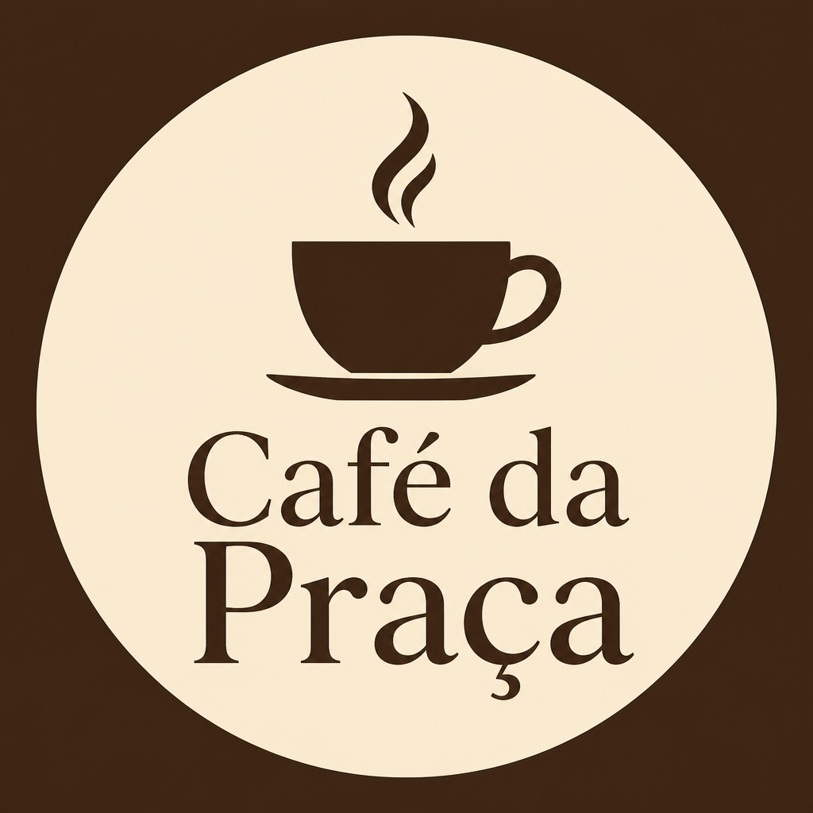
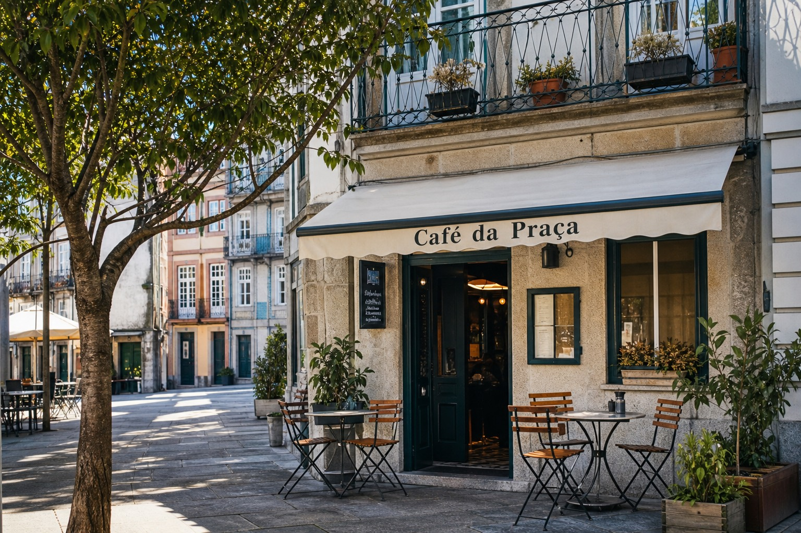
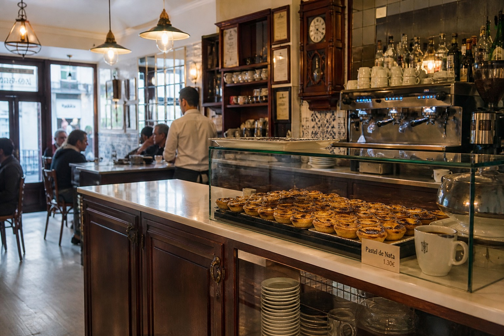
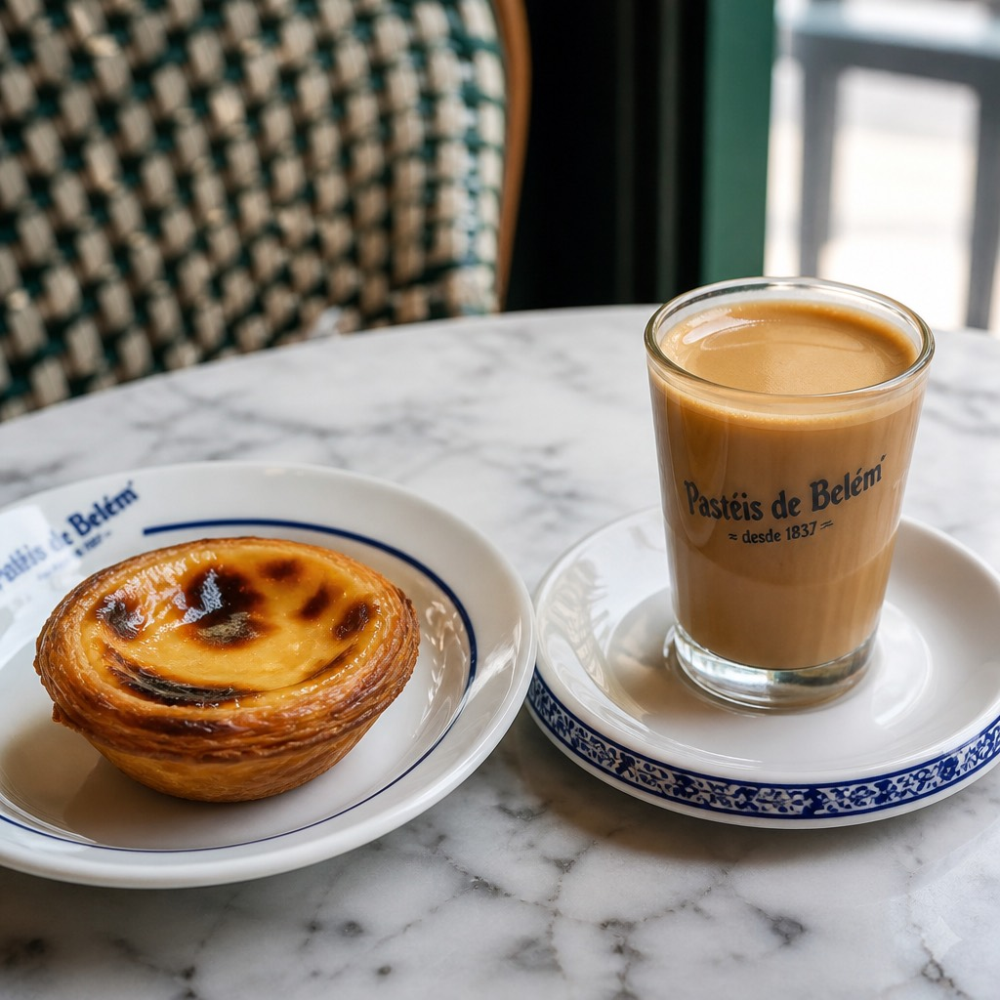

Café · Praça da Liberdade, Porto

Café de bairro com pastelaria fresca, esplanada e Wi-Fi. Ideal para um café rápido ou uma pausa a meio da tarde — o exemplo completo do que o vosso pin no Google e o site próprio podem mostrar juntos.
Café e pastelaria · Pequeno-almoço · Esplanada · Wi-Fi · Take-away

